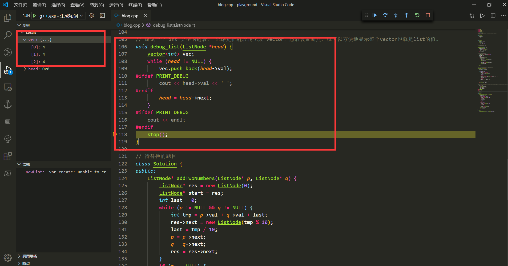
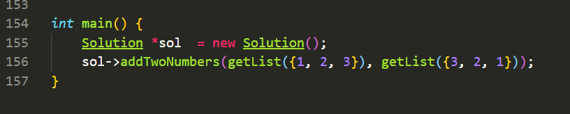

这篇博客介绍一个在vscode中调试leetcode代码的方法(技巧).
众所周知, leetcode中做题和其他OJ有很大区别, 其他OJ大多都是交完整代码, 自定义输入输出. 而leetcode定义了一个Solution类, 我们只需要专注于关键的实现部分, 并将结果作为返回值返回就好.
这样的方便带来了一个问题, 那就是调试的不方便.
在网页上, 我们没有本地的debug工具, 只能通过输出变量来进行调试.
而如果拷贝到本地, 就需要自定义输入输出.
这篇文章介绍的就是如何快速准备好本地运行环境.
答案是使用 snippet. 我们只需要将leetcode通用的模板加入到snippet中, 然后命名为leetcode, 那么我们输入leetcode的时候, 就可以直接导入这部分代码片段.
比如下面的模板, 包含了建立list, 建立tree的代码. 我们只需要很方便的在main函数中写上输入数据就可以了.
1
2
3
4
5
6
7
8
9
10
11
12
13
14
15
16
17
18
19
20
21
22
23
24
25
26
27
28
29
30
31
32
33
34
35
36
37
38
39
40
41
42
43
44
45
46
47
48
49
50
51
52
53
54
55
56
57
58
59
60
61
62
63
64
65
66
67
68
69
70
71
72
73
74
75
76
77
78
79
80
81
82
83
84
85
86
87
88
89
90
91
92
93
94
95
96
97
98
99
100
101
102
103
104
105
106
107
108
109
110
111
112
113
114
115
116
117
118
119
120
121
122
123
124
125
126
127
128
129
130
131
132
133
134
135
136
|
#include <iostream>
#include <map>
#include <queue>
#include <stack>
#include <unordered_map>
#include <vector>
using namespace std;
// debug 函数中是否输出的宏定义。 如果定义PRINT，那么在控制台中就会输出
// #define PRINT_DEBUG
// 链表结构
struct ListNode {
int val;
ListNode *next;
ListNode(int v) {
val = v;
next = NULL;
}
};
// 树结构
struct TreeNode {
int val;
TreeNode *left, *right;
TreeNode(int v) {
val = v;
left = right = NULL;
}
};
// 用来设置调试断点分隔的空函数
void stop() {}
// 通过传入一个 vector 来得到一个 list
ListNode *getList(vector<int> vec) {
ListNode *head = new ListNode(0);
ListNode *start = head;
for (auto v : vec) {
head->next = new ListNode(v);
head = head->next;
}
return start->next;
}
// 传递解析了的参数之后真正进行建立树的函数
// leetcode 用的是层次遍历的方法
TreeNode *buildTree(vector<int> nums, unordered_map<int, int> isNULL) {
if (nums.size() == 0 || isNULL[0] == 1) return NULL;
TreeNode *root = new TreeNode(nums[0]);
queue<TreeNode *> Q;
Q.push(root);
int index = 1;
while (not Q.empty()) {
TreeNode *front = Q.front();
Q.pop();
if (isNULL[index] == -1) {
front->left = new TreeNode(nums[index]);
Q.push(front->left);
if (index >= nums.size()) break;
index++;
} else if (isNULL[index] == 1) {
index++;
}
if (isNULL[index] == -1) {
front->right = new TreeNode(nums[index]);
Q.push(front->right);
if (index >= nums.size()) break;
index++;
} else if (isNULL[index] == 1) {
index++;
}
}
stop();
return root;
}
// 两个参数， 第一个是跟 leetcode 中一样的表示结点值的列表
// 但是由于 有null表示空结点，所以传递字符串方便解析
TreeNode *getTree(string nodes) {
vector<int> nums;
unordered_map<int, int> isNULL;
nodes += ",";
// 结点的值以及索引
int val = 0, index = 0;
for (int i = 0; i < nodes.size(); i++) {
if (nodes[i] == ' ') continue;
if (nodes[i] == ',') {
nums.push_back(val);
index += 1;
val = 0;
continue;
}
if (nodes[i] == 'n' && i < nodes.size() - 4 && nodes[i + 1] == 'u' &&
nodes[i + 2] == 'l' && nodes[i + 3] == 'l') {
isNULL[index] = 1;
i += 3;
continue;
}
if (nodes[i] < '0' || nodes[i] > '9') {
exit(1);
}
val = val * 10 + (nodes[i] - '0');
}
for (int i = 0; i < nums.size(); i++) {
if (isNULL[i] != 1) isNULL[i] = -1;
}
stop();
TreeNode *tree = buildTree(nums, isNULL);
return tree;
}
// 调试一个 int 类型的链表， 思路是把链表转化成 vector，然后设置断点，就可以方便地显示整个vector也就是list的值。
void debug_list(ListNode *head) {
vector<int> vec;
while (head != NULL) {
vec.push_back(head->val);
#ifdef PRINT_DEBUG
cout << head->val << ' ';
#endif
head = head->next;
}
#ifdef PRINT_DEBUG
cout << endl;
#endif
stop();
}
// 待替换的题目
leetcode_problem
int main() {
Solution *sol = new Solution();
}
|
vscode的snippet不可以直接将所有的代码直接放上去, 可以一行一行地设置snippet, 但我找到一种方便地添加整个代码的方法.
-
首先将你想要设置的snippet写在文本里, 在vscode上打开
-
按ctrl+F使用replace功能, 选择正则表达式模式
-
然后待替换字符串输入\t或者是四个空格(具体看自己编辑器), 然后替换字符串设置为\\t. 这里\\是经过了一个转义之后的\, 也就是保留一个\.
-
然后替换字符串输入\n代表换行, 待替换字符串设置为\\n, 原理同上.
之后, 那段代码片段就会将换行和制表符用\t和\n显示了, 就可以在snippet设置中放在一行
以下是我转化之后的代码片段
1
|
#include <iostream>\n#include <map>\n#include <queue>\n#include <stack>\n#include <unordered_map>\n#include <vector>\nusing namespace std;\n\n// debug 函数中是否输出的宏定义。 如果定义PRINT，那么在控制台中就会输出\n// #define PRINT_DEBUG\n\n// 链表结构\nstruct ListNode {\n\tint val;\n\tListNode *next;\n\tListNode(int v) {\n\t\tval = v;\n\t\tnext = NULL;\n\t}\n};\n\n// 树结构\nstruct TreeNode {\n\tint val;\n\tTreeNode *left, *right;\n\tTreeNode(int v) {\n\t\tval = v;\n\t\tleft = right = NULL;\n\t}\n};\n\n// 用来设置调试断点分隔的空函数\nvoid stop() {}\n\n// 通过传入一个 vector 来得到一个 list\nListNode *getList(vector<int> vec) {\n\tListNode *head = new ListNode(0);\n\tListNode *start = head;\n\tfor (auto v : vec) {\n\t\thead->next = new ListNode(v);\n\t\thead\t = head->next;\n\t}\n\treturn start->next;\n}\n\n// 传递解析了的参数之后真正进行建立树的函数\n// leetcode 用的是层次遍历的方法\nTreeNode *buildTree(vector<int> nums, unordered_map<int, int> isNULL) {\n\tif (nums.size() == 0 || isNULL[0] == 1) return NULL;\n\tTreeNode *root = new TreeNode(nums[0]);\n\tqueue<TreeNode *> Q;\n\tQ.push(root);\n\tint index = 1;\n\twhile (not Q.empty()) {\n\t\tTreeNode *front = Q.front();\n\t\tQ.pop();\n\t\tif (isNULL[index] == -1) {\n\t\t\tfront->left = new TreeNode(nums[index]);\n\t\t\tQ.push(front->left);\n\t\t\tif (index >= nums.size()) break;\n\t\t\tindex++;\n\t\t} else if (isNULL[index] == 1) {\n\t\t\tindex++;\n\t\t}\n\t\tif (isNULL[index] == -1) {\n\t\t\tfront->right = new TreeNode(nums[index]);\n\t\t\tQ.push(front->right);\n\t\t\tif (index >= nums.size()) break;\n\t\t\tindex++;\n\t\t} else if (isNULL[index] == 1) {\n\t\t\tindex++;\n\t\t}\n\t}\n\tstop();\n\treturn root;\n}\n \nTreeNode *getTree(string nodes) {\n\tvector<int> nums;\n\tunordered_map<int, int> isNULL;\n\tnodes += \",\";\n\n\tint val = 0, index = 0;\n\tfor (int i = 0; i < nodes.size(); i++) {\n\t\tif (nodes[i] == ' ') continue;\n\t\tif (nodes[i] == ',') {\n\t\t\tnums.push_back(val);\n\t\t\tindex += 1;\n\t\t\tval = 0;\n\t\t\tcontinue;\n\t\t}\n\t\tif (nodes[i] == 'n' && i < nodes.size() - 4 && nodes[i + 1] == 'u' &&\n\t\t\tnodes[i + 2] == 'l' && nodes[i + 3] == 'l') {\n\t\t\tisNULL[index] = 1;\n\t\t\ti += 3;\n\t\t\tcontinue;\n\t\t}\n\t\tif (nodes[i] < '0' || nodes[i] > '9') {\n\t\t\texit(1);\n\t\t}\n\t\tval = val * 10 + (nodes[i] - '0');\n\t}\n\tfor (int i = 0; i < nums.size(); i++) {\n\t\tif (isNULL[i] != 1) isNULL[i] = -1;\n\t}\n\tstop();\n\tTreeNode *tree = buildTree(nums, isNULL);\n\treturn tree;\n}\n\n// 调试一个 int 类型的链表， 思路是把链表转化成 vector，然后设置断点，就可以方便地显示整个vector也就是list的值。\nvoid debug_list(ListNode *head) {\n\tvector<int> vec;\n\twhile (head != NULL) {\n\t\tvec.push_back(head->val);\n#ifdef PRINT_DEBUG\n\t\tcout << head->val << ' ';\n#endif\n\t\thead = head->next;\n\t}\n#ifdef PRINT_DEBUG\n\tcout << endl;\n#endif\n\tstop();\n}\n\n// 待替换的题目\n${leetcode_problem}\n\nint main() {\n\tSolution *sol = new Solution();\n\t${solve}\n}
|
注意, snippet中可以设置变量, 比如${leetcode_problem}, 输入snippet之后, 光标会按顺序移动到这些变量出, 按TAB切换光标位置.
有特殊的snippet变量, 比如${1}, 是光标出现的第一个位置, ${2}依此类推.
而${0}是最后一个位置.
通过设置光标的位置, 我们可以更高效地写代码.
如图所示, 调用上面实现的debug_list函数, 可以方便地直接看到传入的链表的值.

这个问题是leetcode的第二题, 链表的两数求和
输入的数据是这样子的模式, 调用getList函数可以很方便地将vector转化成list.
